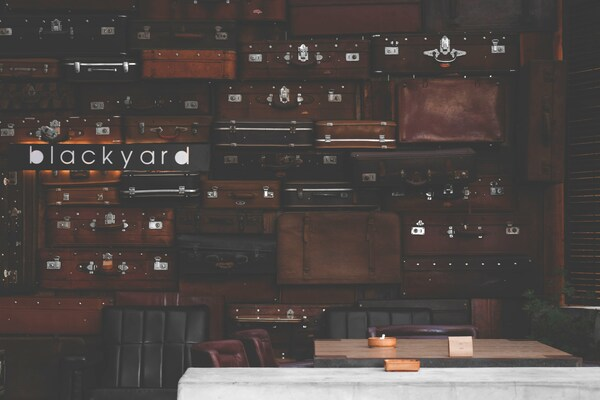

Sobre nosotros
En Café Cottage, nos apasiona crear un refugio donde la tradición del café se encuentra con el toque rústico y encantador del estilo cottage. Aquí cada taza de café y cada pastelito son preparados con amor y dedicación, para que te sientas en casa desde el primer sorbo.
Nuestra historia
La idea de Café Cottage nació de la fascinación por los pequeños cafés que decoran las calles del campo inglés. Siempre soñamos con tener un lugar donde las personas pudieran desconectar de la rutina diaria, disfrutar de un buen café, y llevarse consigo un pedazo de nostalgia a través de nuestros pasteles y cerámica única.
Productos y especialidades
Nuestro bakery, desde el clásico croissant hasta nuestros muffins caseros, son hechos diariamente con ingredientes frescos y locales. Además, contamos con una cuidada selección de artículos de cerámica artesanal que te permitirán llevarte un pedazo de Café Cottage a tu hogar.

Te invitamos a que nos visites y descubras el encanto de Café Cottage.
Ven a disfrutar de un buen café, un pastel recién horneado y un ambiente que te hará sentir como en tu propio hogar.